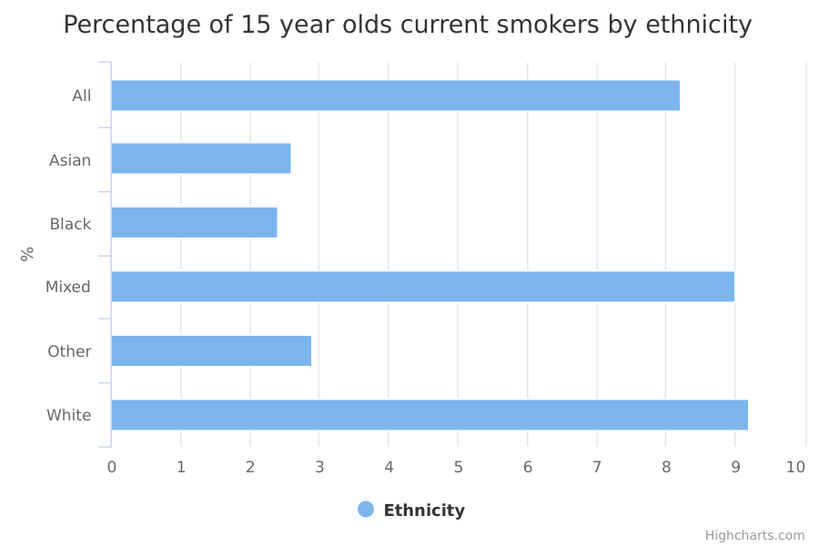

Cigarette smoking among 15 year olds
The main facts and figures show that:
- 8.2% of 15 year olds responding to the 2014/15 survey were smokers
- smoking was least common amongst the 15 year olds in the Black, Asian and Other ethnic groups, at 2.4%, 2.6% and 2.9% respectively
- smoking was most common amongst White 15 year olds and those in the Mixed/Multiple ethnic group, at 9.2% and 9.0% respectively
- 15 year olds who are White were nearly 4 times more likely to be smokers than 15 year olds who are Black
Things you need to know
The What About YOUth (WAY) survey is based on a random sample of pupils drawn from the National Pupil Database (NPD), and postal surveys are sent to pupils’ homes.
The information it collects is used to make generalisations about the total population. As with all surveys, the estimates from the WAY survey are subject to a degree of uncertainty as they are based on a sample of the population. The degree of uncertainty is greater when the number of respondents is small, so it will be highest for minority ethnic groups.
The differences in the percentage of 15 year olds smoking that were observed between ethnic groups and reported on here were larger than any uncertainty around the estimates (they were statistically significant).
The survey excludes pupils in independent schools, since these schools are not covered by the NPD. No other suitable database was available for sampling pupils, and it was concluded that survey estimates would not be significantly different as a result of these schools not being included.
Evidence suggests young people are less willing to admit to smoking when answering survey questions such as this at home, particularly in comparison with school-based surveys. Data on smoking prevalence is also collected by the annual Smoking, Drinking and Drug Use (SDD) Among Young People Survey, which is a schools-based survey of 11 to 15 year olds. It is not unusual for different survey methods to give different results and these estimates were not intended to be, and should not be, compared to other sources of smoking data without an understanding of the impact of different methodologies.
For more information about the reliability of the data, including an explanation of confidence intervals, see the technical section at the end of this measure. Confidence intervals are available in the ‘download the data’ section and also available in the CSV downloads beneath the graph.
What the data measures
This data measures the percentage of 15 year olds who were current smokers in 2014/15, based on responses to the What About YOUth (WAY) survey.
The percentage is calculated as the number of respondents who were current smokers, out of the total number who gave a valid response on their smoking status.
Respondents were asked to tick which statement best describes their smoking status. Current smokers were those who agreed:
- "I sometimes smoke cigarettes now but I don't smoke as many as one a week"
- "I usually smoke between one and six cigarettes per week"
- "I usually smoke more than six cigarettes per week"
Those respondents who had never smoked, had only ever tried smoking once or twice, or used to smoke but do not smoke now, were not counted as current smokers.
The WAY survey collected data from 15 year olds across England. Respondents completed a paper questionnaire delivered to their home, and returned it by post - or had the option to complete it online.
Why these ethnic categories were chosen
Respondents were asked to select their ethnicity from standardised ethnic groups based on the 2011 census.
For this data, however, the number of people surveyed (the ‘sample size’) was too small to draw any firm conclusions about detailed ethnic categories. Therefore, the data is broken down into the following 5 broad groups:
- White
- Mixed/Multiple ethnic groups
- Asian/Asian British
- Black/African/Caribbean/Black British
- Other ethnic group
Cigarette smoking among 15 year olds by ethnicity

| All | 8.2 | 116,646 | 8.1 | 8.3 |
|---|---|---|---|---|
| Asian | 2.6 | 9,495 | 2.3 | 2.9 |
| Black | 2.4 | 4,876 | 2.0 | 2.8 |
| Mixed | 9.0 | 3,721 | 8.2 | 9.8 |
| Other | 2.9 | 554 | 1.7 | 4.1 |
| White | 9.2 | 86,530 | 9.0 | 9.4 |
Summary
-
8.2% of 15 year olds responding to the 2014/15 survey were smokers
-
smoking was least common amongst the 15 year olds in the Black, Asian and Other ethnic groups, at 2.4%, 2.6% and 2.9% respectively
-
smoking was most common amongst White 15 year olds and those in the Mixed/Multiple ethnic group, at 9.2% and 9.0% respectively
-
15 year olds who are White were nearly 4 times more likely to be smokers than 15 year olds who are Black
Download image and data
Methodology and data type
Purpose Of Data Source
"What About YOUth? 2014 (WAY 2014) is a newly-established survey designed to collect robust data on a range of health behaviours amongst 15 year-olds. This data is collected to understand smoking patterns in children and address the issues of reducing the uptake of smoking among children.
The Health and Social Care Information Centre (HSCIC) was commissioned by the Department of Health to run the survey in direct response to the Children and Young People’s Health Outcomes Forum. This Forum identified gaps in the Public Health Outcomes Framework (PHOF) and other key health behaviour measures relating to young people. HSCIC contracted Ipsos MORI to carry out the survey.
WAY 2014 is the first survey to be conducted of its kind and it is hoped that the survey will be repeated in order to form a time series of comparable data on a range of indicators for 15 year-olds across England. Data has been collected on general health, diet, use of free time, physical activity, smoking, drinking, emotional wellbeing, drugs and bullying."
Methodology
A sample of approximately 300,000 young people were selected from the National Pupil Database (NPD) and contacted to take part in the postal survey, with the option to complete it online. Fieldwork ran between 22nd September 2014 and 9th January 2015. A total of 120,115 out of 295,024 participants responded to the survey. In a minority of cases (1% of pupils selected for the 2014 survey), parents opted their children out of the survey. A £5 shopping voucher was used as the token of appreciation, which was conditional on completing the questionnaire. The response rate was 41%, when taking into account any undeliverable mail outs and opt-outs from the sampled pupils.
By using the NPD as a sampling frame, it was possible to stratify the sample to help ensure the sample was representative across a range of pupil and area characteristics. Data were weighted by gender, ethnicity, Free School Meal eligibility, quintile of the Index of Multiple Deprivation, and local authority to reflect the known population profile of 15 year olds in England (sourced from the NPD).
Both the numerator and the denominator are weighted to make them applicable to the population as a whole. Further details on the sampling methodology and weighting procedure can be found in the WAY survey technical report
Confidence intervals
Confidence intervals for each ethnic group are available in the ‘download the data’ section and also available from the CSV downloads for ‘Cigarette smoking among 15 year olds by ethnicity’.
The survey found 8.2% of all 15 year olds responding to the survey were smokers. The confidence interval of 8.1% to 8.3% for this survey gives the lower and upper limits to the range of values the 'true' value could lie between. A '95% confidence interval' is one where we consider there to be 95% chance that the 'true' value lies between the lower and upper limits. In other words, if 100 random samples were taken, for 95 of those samples the estimate would lie within the range of the confidence interval.
Because a smaller number of children in minority ethnic groups were surveyed for WAY, the true percentage of smokers in these groups is likely to lie within a much wider range.
For example, the number of 15 year olds from the Mixed ethnic group surveyed was 3,721, and the confidence interval indicates the percentage of smokers in this group is likely to lie between 8.2% to 9.8%.
However, the differences in the percentage of 15 year olds smoking between ethnic groups were statistically significant: the differences were larger than the margins of uncertainty around these estimates.
Data type
Survey
Type of statistic
Official statistic
Disclosure control
No disclosure control applied
Rounding
Unrounded
Further technical information
Further information can be found on smoking prevalence from the WAY survey
Data source details
-
Public Health England based on HSCIC What About YOUth (WAY) survey data
-
NHS Digital
-
November 2015
-
November 2015
-
Annual
-
https://www.ipsos-mori.com/Assets/Docs/Publications/ipsos-mori-sri-health-what-about-youth-eng-2014-smoking-report-060815.pdf
http://content.digital.nhs.uk/catalogue/PUB19244/what-about-youth-eng-tech-rep.pdf